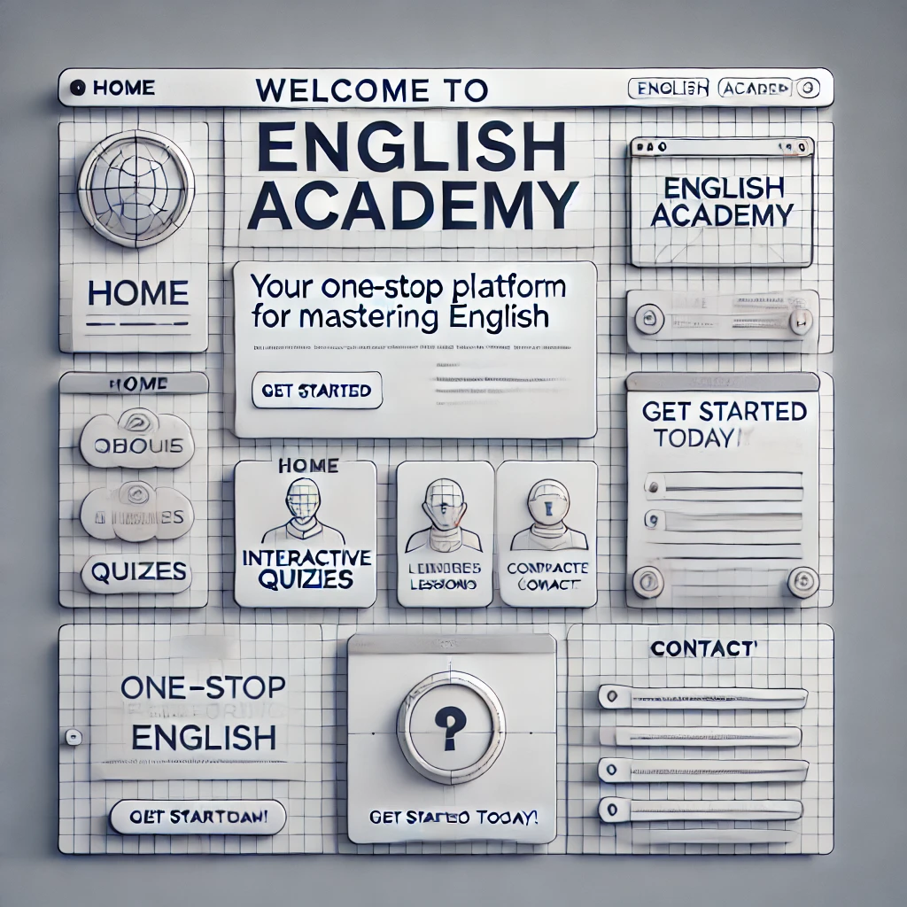
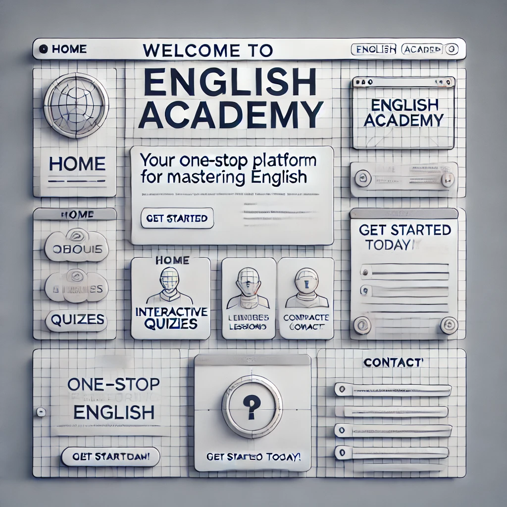

Purpose: The English Academy website aims to provide resources and courses to help individuals improve their English skills. It offers a range of lessons and materials to make learning English simple and effective.
Java Script: The English Academy website will use JavaScript to add interactivity and smooth animations. For navigation, a menu will appear when the user clicks icons and will close when they click the close button or any navigation link. The site will also feature GSAP animations to create smooth and engaging transitions for various elements, such as text and images, as they fade in and slide from different directions. This will make the site feel dynamic and responsive to user interactions.
Colors and Fonts
Colors:
Primary: #4A90E2 (Blue, for a professional and educational feel)
Secondary: #50E3C2 (Teal, for a fresh, inviting touch)
Background: #F5F5F5 (Light Gray, for clean readability)
Accent: #D0021B (Red, for attention-grabbing elements like buttons or alerts)
Fonts:
Headings: Roboto Slab (Serif, modern and professional)
Body Text: Open Sans (Sans-serif, clean and easy to read)
Content
Home Page Text:
Header: "Welcome to English Academy"
Subheader: "Your one-stop platform for mastering English."
Body:
"Discover interactive lessons, quizzes, and resources tailored to help you excel in English."
"Join a growing community of learners and educators passionate about language skills."
Call-to-action button: "Get Started Today!"
Child Page (e.g., Quizzes):
Header: "Interactive Quizzes"
Body:
"Test your knowledge with our engaging quizzes."
"Instant feedback to help you learn and grow."
Example quiz categories: Vocabulary, Grammar, Listening Skills.
Images/Icons:
Home Page: A hero image of students learning or a classroom setting.
Quizzes Page: Icons representing books, pencils, or digital learning.
 
